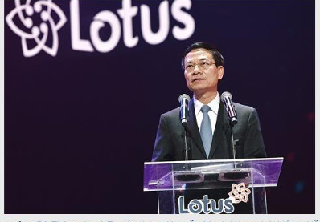
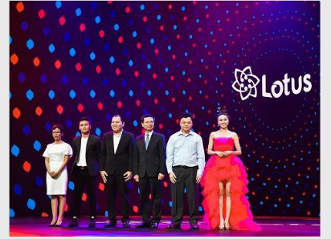

Tối16/9,mạng xã hội Lotus đã chính thức được ra mắt người dùng Việt tại Cung Hữun ghị Việt-Xô(Hà Nội).Lotus được kỳ vọng nếu thành công sẽ góp phần để đến 2020,người dùng các mạng xã hội Việt Nam sẽ tương đương người Việt Nam dùng các mạng xã hội nước ngoài...
TIN LIÊN QUAN
Mạng xã hội Lotus là sản phẩm được hoàn thành với 200 kỹ sư công nghệ Việt, họ đã "giải" những bài toàn chính như: cá nhân hóa dòng tin và các luồng thông tin; các thuật toán giới thiệu, chọn lựa thông tin liên quan tùy theo ngữ cảnh; lưu trữ, đọc và phân tích dữ liệu siêu lớn; Các bài toán nhận dạng hình ảnh, chữ phục vụ việc bảo vệ bản quyền, chống spam, chống gian lận, an ninh mạng, quản trị comments. Các kỹ sư của VCcorp đã tự làm chủ cáccông nghệ khó như AI, Big Data, Data Mining, image Processing... triển khai cho mạng Lotus. Lotus được xây dựng bởi 3 trụ chính bao gồm: Nội dung, sản phẩm và cộng đồng. Để có nội dung ban đầu tốt, Lotus đã hợp tá với hơn 500 nhà sáng tạo nội dung trong 20 lĩnh vực khác nhau bao gồm giáo dục, kinh tế, nhiếp ảnh, viết truyện, blog, vlog, lifestyle, giải trí, âm nhạc, marketing.
 bộ trưởng Bộ thông tin và Tryền thông Nguyễn Mạnh Hùng phát biểu tại lễ ra mắt mạng xã hội LotusPhát biểu tại buổi lễra mắt mạng xã hội Lotus, Bộtrưởng BộThông tin và Truyền thông Nguyễn Mạnh Hùng đánh giá cao nỗlực của VCCorp khi nghiên cứu và xây dựng mạng xã hội Lotus. Theo Bộ trưởng, Lotus là sựdấn thân đầu tư của doanh nghiệp công nghệvào một lĩnh vực khó, khi mà thịtrường đã bị thống trị bởi những gã khổng lồ toàn cầu. Tuy nhiên, mạng xã hội rồi cũng cần một cách tiếp cận mới. Giá trịkhổng lồđược cộng đồng tạo ra không thể một người làm nền tảng hưởng hết mà phải được chia sẻ. Cộng đồng có nhu cầu được kiểm soát luật chơi, họphải là chủnhân của cuộc chơi chứkhông phải là nạn nhân của thuật toán giấu kín. Theo Bộtrưởng, nền tảng có thểlà toàn cầu nhưng phải cho phép tạo ra những Sub-Platforms để giải những bài toán mang tính ngữ cảnh cụ thể.
 Bộ trưởng Bộ TT&TT Nguyễn Mạnh Hùng cùng Tổng giám đốc VCCORP Nguyễn Thế Tân và các đại biểu cùng khai trương mạng xã hội LotusĐã là nền tảng thì phải đủ sạch để tạo môi trường lành mạnh, những gì vi phạm những giá trị cốt lõi của nhân loại, của đạo đức xã hội thì phải được nền tảng tự động loại bỏ. Đề cao hợp tác, hợp tác với các ngành, các cá nhân để đưa lên nền tảng các giá trịmới. Theo Bộ trưởng Nguyễn Mạnh Hùng, mạng xã hội Lotus mà hôm nay khai trương chính là một sản phẩm của làn sóng Internet thứ ba, một tiếp cận theo cách mới. Bộ trưởng Nguyễn mạnh Hùng đánh giá mạng xã hội Lotus là sự gặp nhau của những người làm công nghệ khát khao một mạng xã hội đời mới, cách tiếp cận mới, công nghệ mới, đáp ứng những nhu cầu mới và những nhà đầu tư Việt Nam có khát vọng Việt Nam hùng cường, kết hợp với chương trình "Make in Vietnam" của Chính phủ.
Bộ trưởng Nguyễn Mạnh Hùng chúc cho Lotus kiên trì mục tiêu để thành công. Thành công của Lotus góp phần gây cảm hứng cho các doanh nghiệp công nghệ Việt Nam khác đang dấn thân Make in Vietnam, tạo ra sản phẩm công nghệ Việt Nam và từ đó đi ra toàn cầu. Theo Bộ trưởng, thành công của Lotus sẽgóp phần để đến 2020, người dùng các mạng xã hội Việt Nam sẽ tương đương người Việt Nam dùng các mạng xã hội nước ngoài.